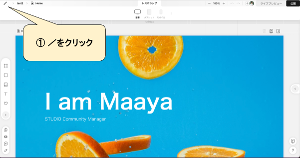
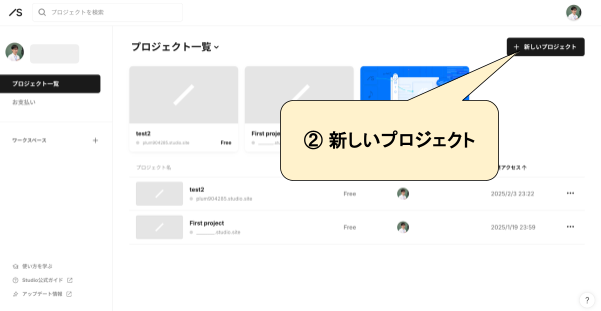
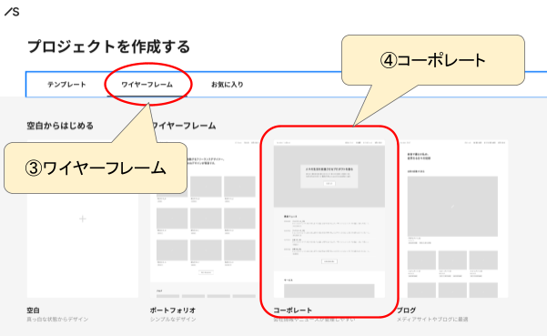
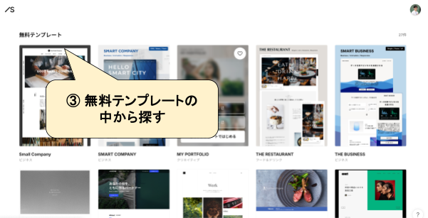
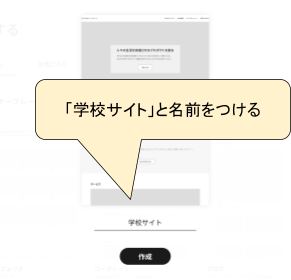
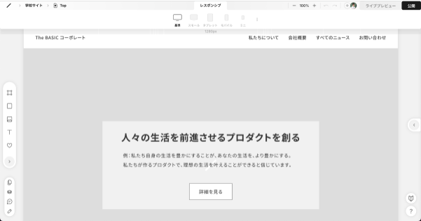

この授業の目標
学校サイトの作成を作成する
これまで学習した内容を活用して、ペルソナに伝わるサイトとなるよう工夫する
前回の活動で調べた内容を再確認
学校サイトに載せる情報を確認
写真・イラストはフリー素材で代用
掲載する内容や文章を生成AIコースを使って作る
コンテンツ内容について相談する
文章を添削してもらう、書かせる
デザインや色について相談する
いろいろと活用してみましょう
この後、②の枠のテンプレートか③無料テンプレートのどちらかを選んでサイト作りを始めてください。
①ダッシュボードに移動

②新しいプロジェクトを作成

③④ワイヤーフレームから作る場合
ワイヤーフレーム → コーポレートを選択

①ダッシュボードに移動
②新しいプロジェクトを作成
③テンプレートを探す

※有料のテンプレートもプレビューで見て参考にしましょう。
名前をつける

制作開始！

今回作成したサイトをより充実させます。掲載させるコンテンツの情報を調べたり、素材を準備しておきましょう。
STUDIOの基本的な使い方を再確認しておいてください。
テンプレートやデザイン性に優れたサイトをよく見て参考にしましょう。
制作に行き詰まったら、誰に何を伝えたいのか？どうして欲しいのか？を思いだしましょう。